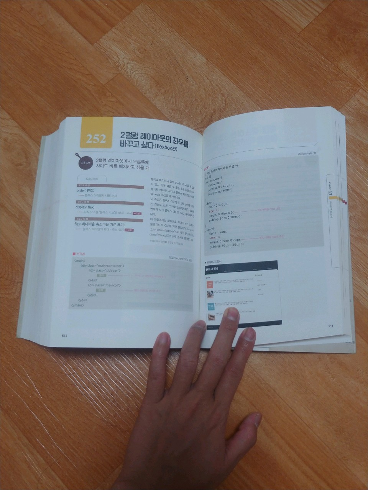
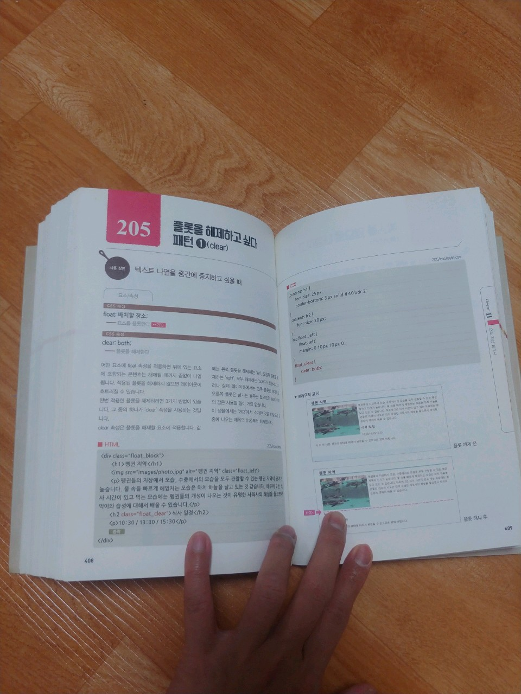
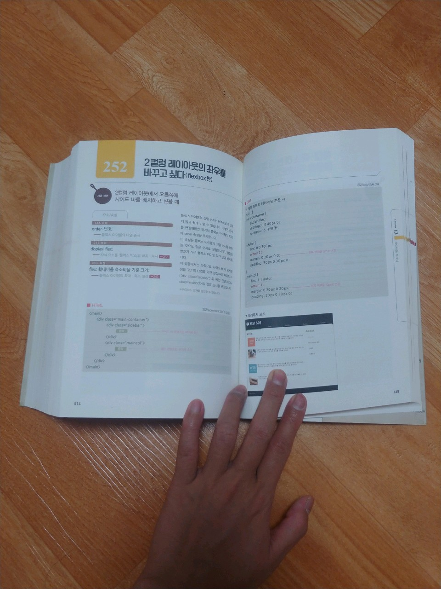
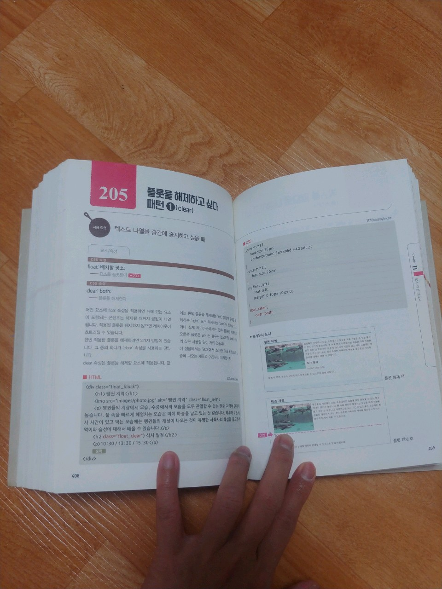
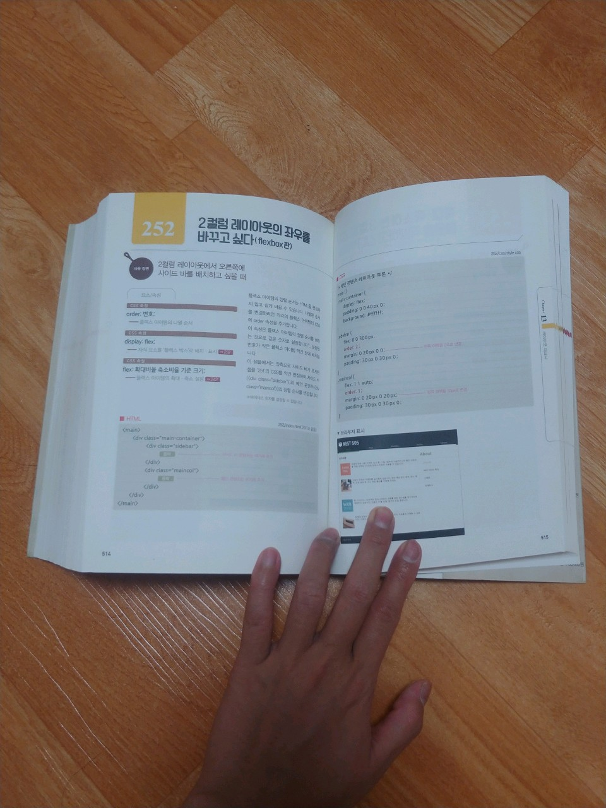
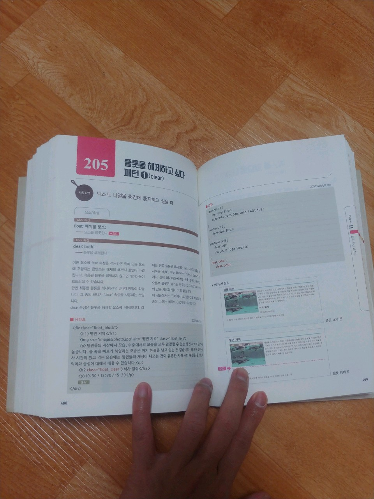

HTML CSS 디자인 레시피 곧바로 사용할 수 있는 테크닉 300
웹개발자를 꿈꾸는 "엄혜빈"이라고 합니다.
2014~2016 한국폴리택2대학 인천캠퍼스 졸업


HTML CSS 디자인 레시피 곧바로 사용할 수 있는 테크닉 300
실무에 바로 적용하는 자바스크립트 레시피 278
모던 웹을 위한 javascript/jquery 입문
예제로 배우는 백엔드 프로그래밍 PHP+MySQL 입문
실전 프로젝트 반응형 웹 퍼블리싱